Як Maintra прийшла від першої версії до 2.0. Що мене не влаштовувало, де я брав натхнення, які ідеї не вижили і з чого склалась нова мова дизайну.
01 Початок
Три Maintra до 2.0
Maintra з'явилась, бо я постійно забував, яку оливу, скільки і коли заливав у свою VW Jetta. Ексельки, паперові чеки, чати з GPT теж постійно губились. Далі застосунок ріс разом із фічами, і кожна нова фіча діставала собі місце на екрані.
Перша версія
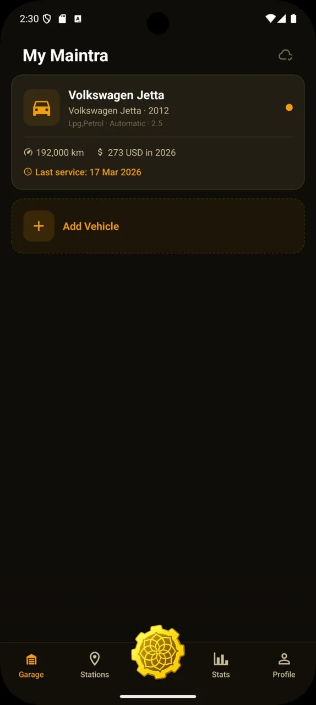
ГаражКартка авто, кнопка «додати» і золота шестерня з мандалою в навбарі.
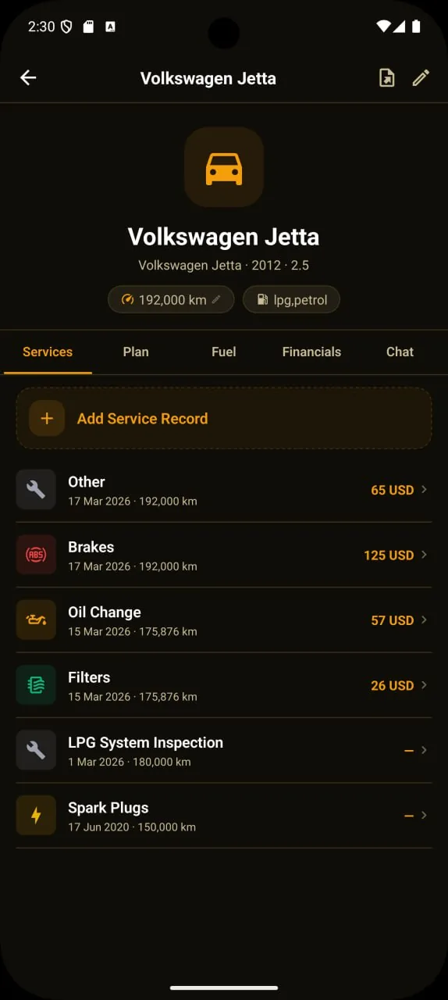
АвтоСписок робіт, вкладки, ціни. Чисто, але дефолтно і без власного стилю.
1.5
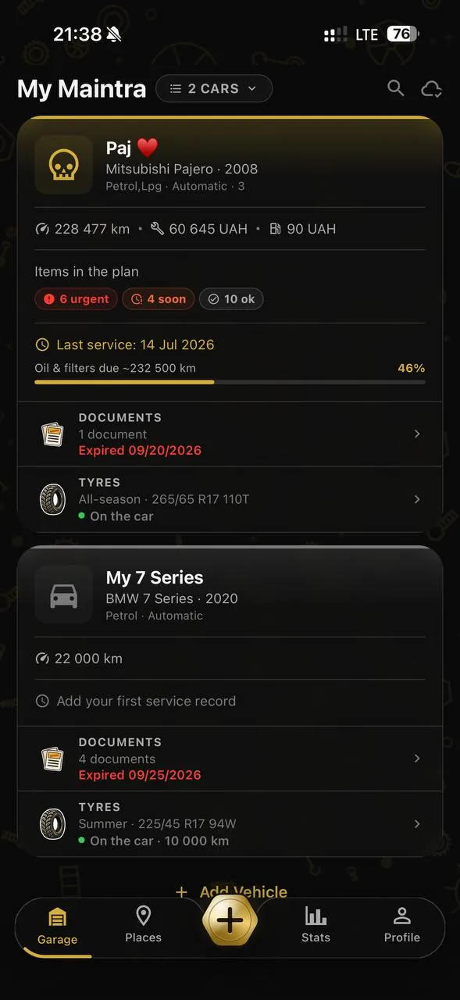
ГаражДва авто, план, документи, шини. Все потрібне, але все однакової ваги.
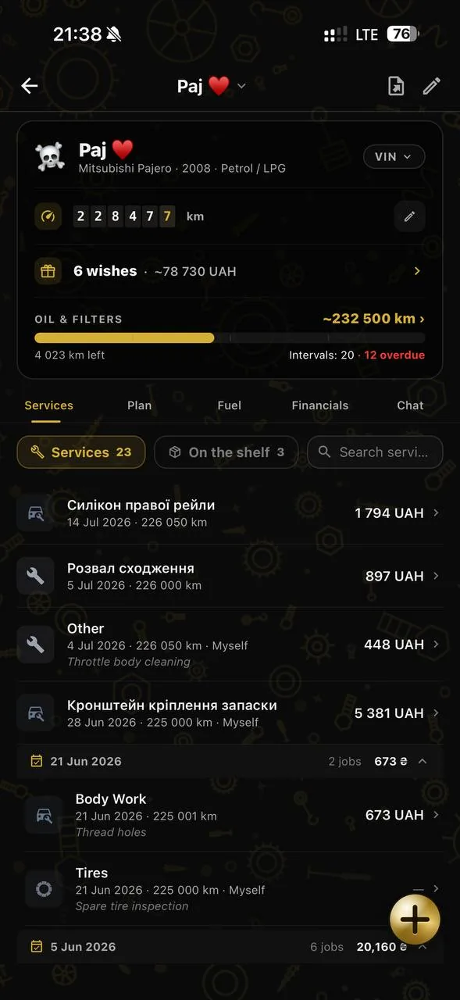
АвтоВішлист, полиця, інтервали. Кнопок більше, ніж відповідей.
1.6, перед редизайном
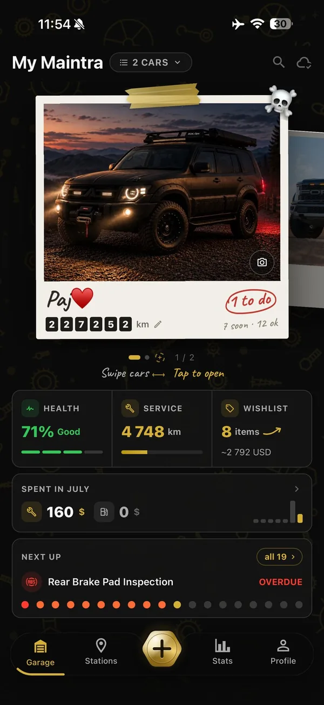
ГаражЗ'явився полароїд. І ще здоров'я, сервіс, вішлист, витрати, наступні роботи.
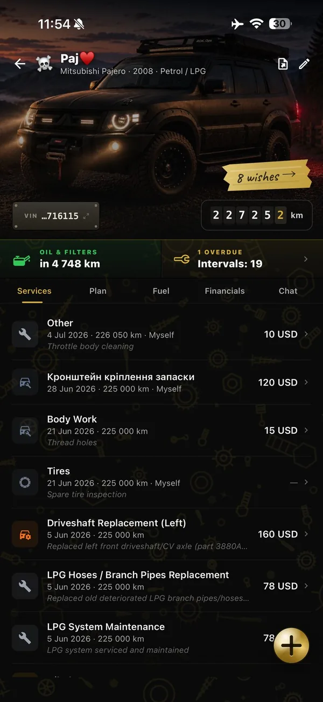
АвтоІсторія робіт уже головна, але тоне серед плашок.
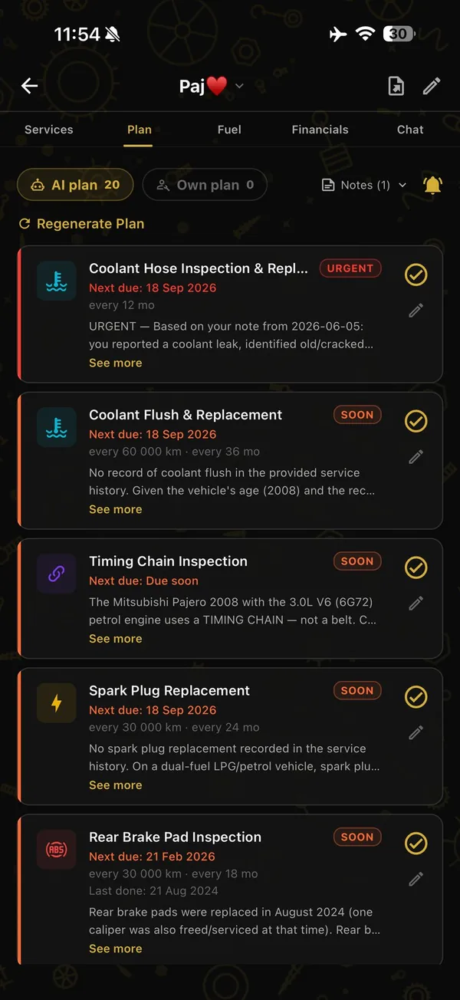
ПланAI-план робить свою справу, а виглядає як усе інше. Плюс згенеровані AI іконки, які помічає кожен і каже «слоп, фу».
Користувачі писали прямо: перевантажено, і виглядає як AI slop. Це і стало стартом.
02 Що мало лишитись
Шість правил до першого наброску
01
Історія авто в центрі
Таймлайн обслуговування і є застосунок. Нові фічі не мають виштовхувати його з екрана.
02
Гараж, а не блокнот
Фото авто висить на стіні, жовтий малярний скотч, наліпки на коробках із запчастинами.
03
Полароїд лишається
Перші 1000+ користувачів отримали свою рамку. Її не можна було просто викинути.
04
Відповіді, не кнопки
Краще щільний екран з цифрами, ніж екран з кнопками і картинками.
05
Нічого не викидати
Усі наявні фічі лишаються. Те, що потрібно часто, на відстані одного тапу.
06
Екран під себе
Користувач сам вирішує, що буде на екранах: які блоки під полароїдом, що в куті, яка рамка.
03 Звідки натхнення
Ігри, студії і справжній бокс
Я збирав мудборди, дивився на ігри й інтерфейси, які люблю. Брав відчуття жанру, а не конкретну гру. Нижче перші наброски і проби пера, які з цього вийшли. Сирі, як є, без поліровки.
Gran Turismo · Forza · Need for Speed · DiRT · WRC
Рейсінг-ігри
Гараж як колекція: кожне авто має свою сторінку, клас і стан.
Стан по вузлах: двигун, гальма, шини, рідини, кузов.
Спокійні меню, де кожна дія приємна, як звук механіки.
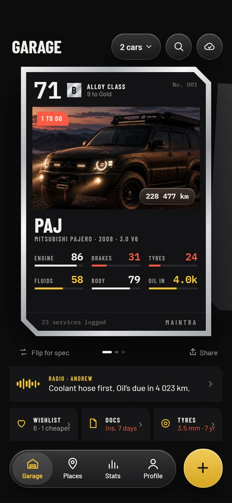
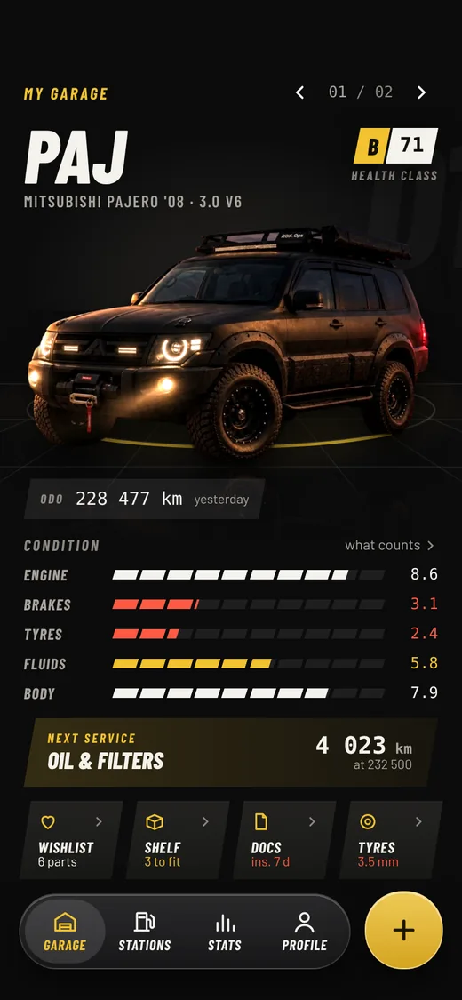
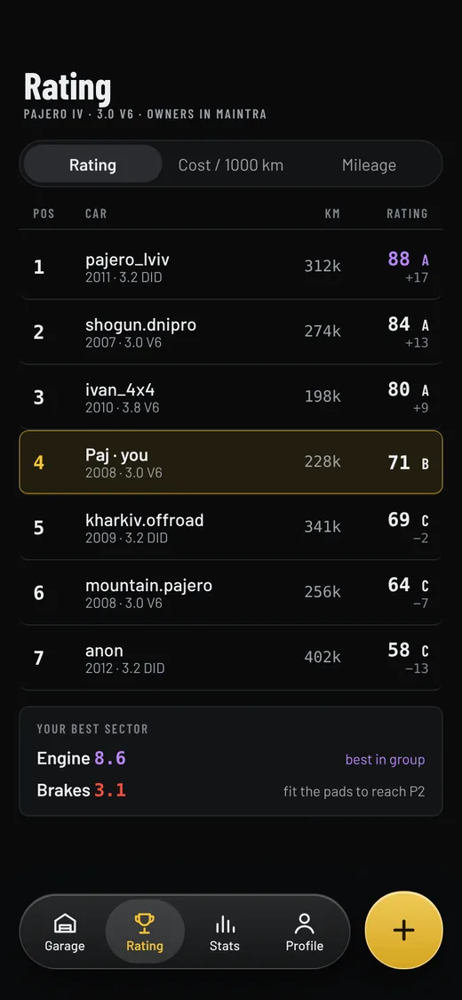
Embark Studios · ARC Raiders · The Finals
Індустріальний UI
Вузький шрифт для назв і цифр, як на табличках та маркуванні.
Зрізані кути замість заокруглень.
Темний фон і один яскравий колір, який означає «натисни тут».
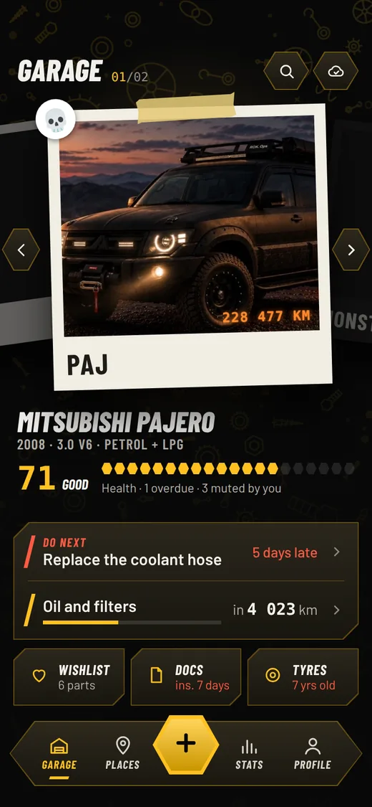
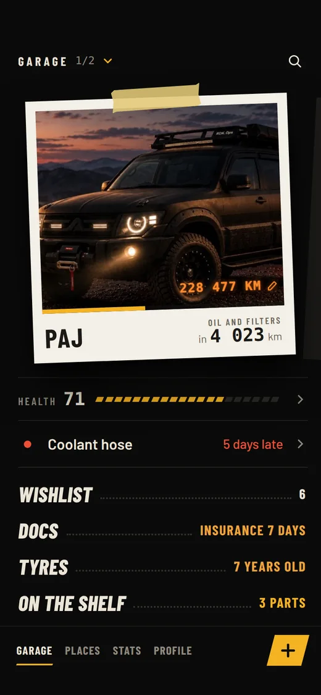
Apple HIG · iOS 26 Liquid Glass
Нативне відчуття
Матове скло для панелей, які пливуть над контентом.
Один-два шрифти, чітка ієрархія, великі цілі для пальця.
Темна і світла тема з першого дня.
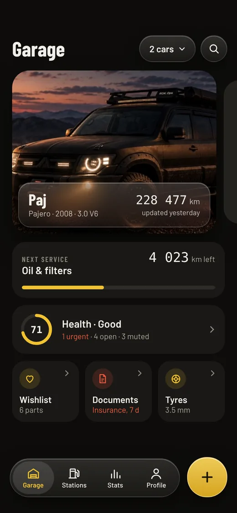
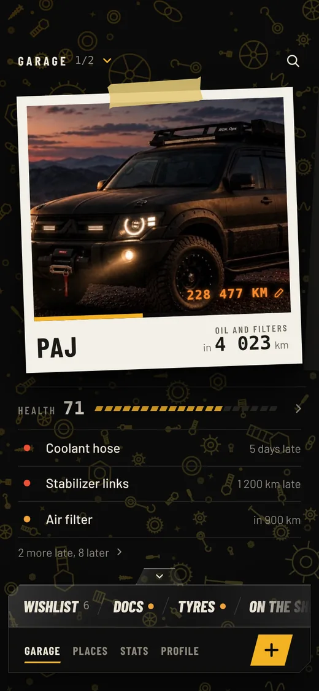
Свій бокс · Pajero 2008
Справжній гараж
Шпалери з дрібних інструментів були в застосунку й раніше. Лишили, бо це вже впізнаваний фон Maintra.
Полароїд теж був. Тепер на ньому тільки фото, пробіг і найближча робота. Рамку можна обрати: класична, вугільна, дудл для перших 1000 користувачів, плюс рамки, які вже є в застосунку. Колекція далі поповнюватиметься.
Іконки з одного аркуша для всього застосунку: прямі лінії, восьмикутники, зрізані кути.
3D-модель кожної автівки майже нереальна: тисячі моделей, років, комплектацій і тюнінгу. Тому в центрі реальне фото саме твого авто.
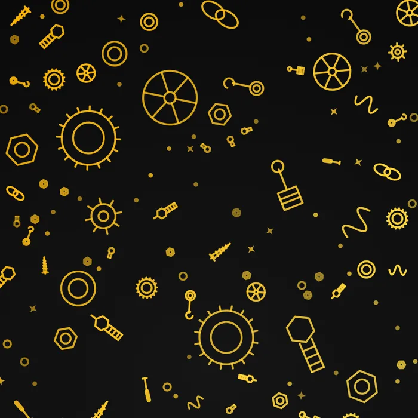
Фон · був і лишився
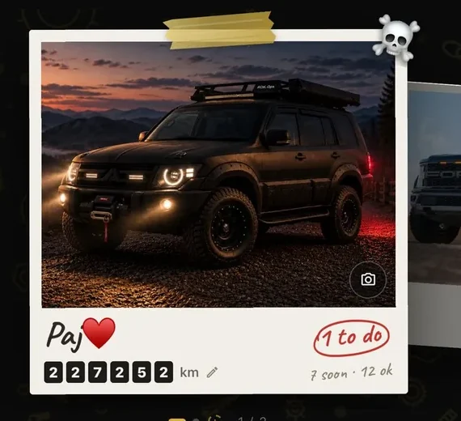
Полароїд · було
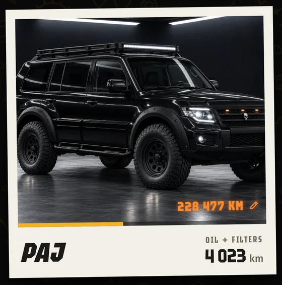
Полароїд · стало
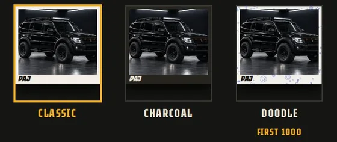
Рамки
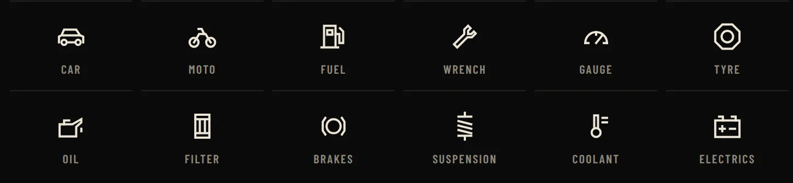
Іконки · один аркуш
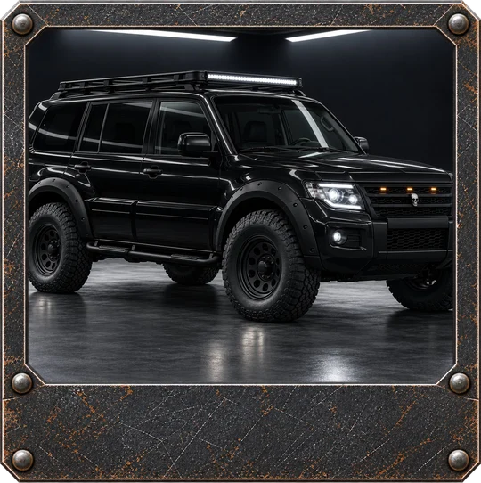
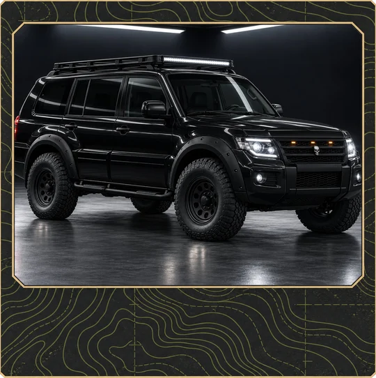
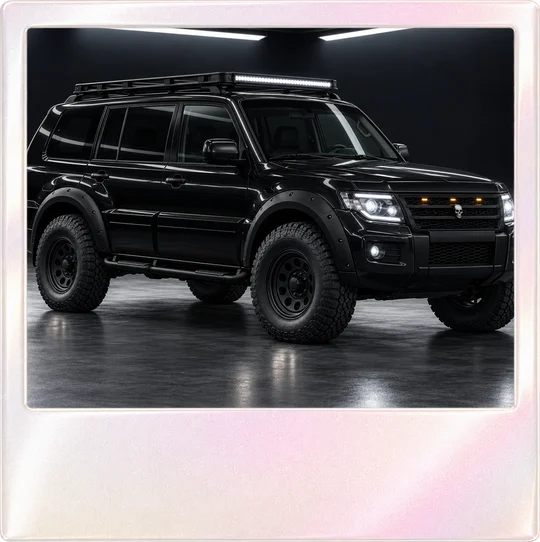
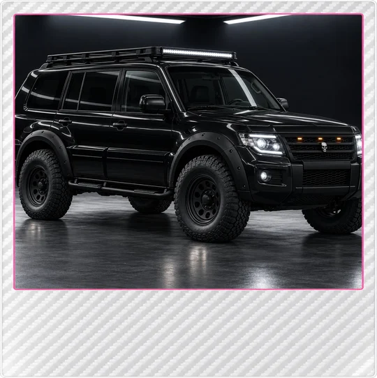
04 Наброски
Один екран, 29 спроб
Головний екран гаража я переробляв найчастіше. Ось частина шляху, від першого підходу до майже фіналу. Гортайте вбік.
v3Справжній боксЛампа над авто, табличка на воротах.v4Гараж як у гріШоурум, клас B, стан по вузлах.
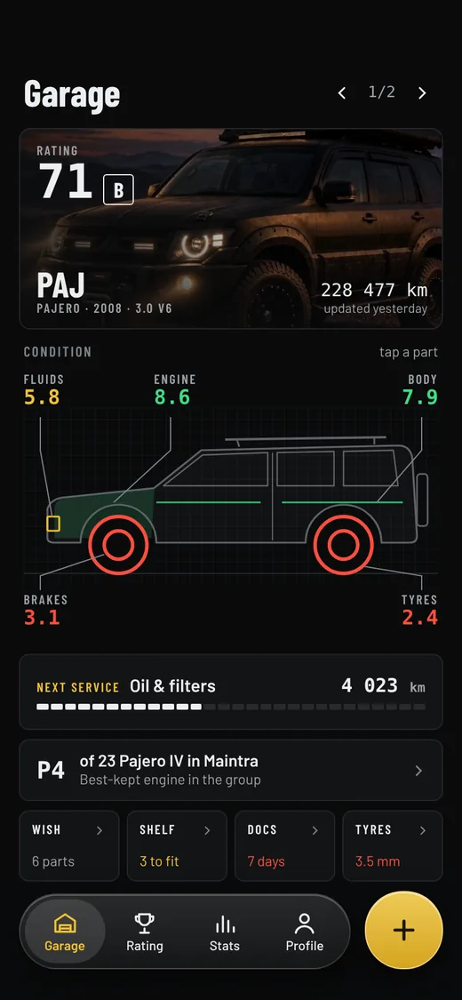
v5Піт-стопСхема авто з балами по системах.
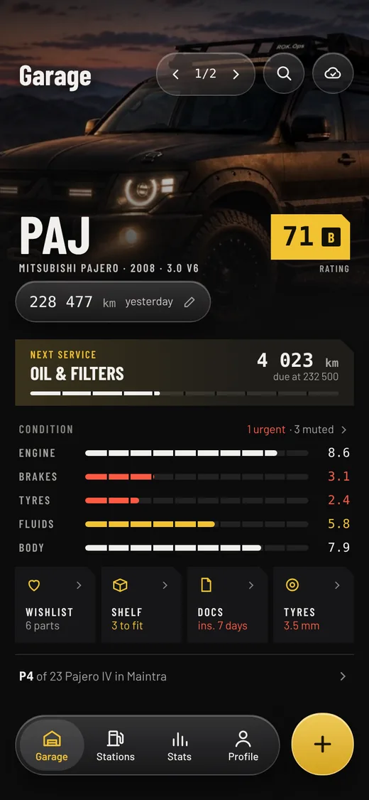
v6Енергія гриТой самий настрій на весь застосунок.
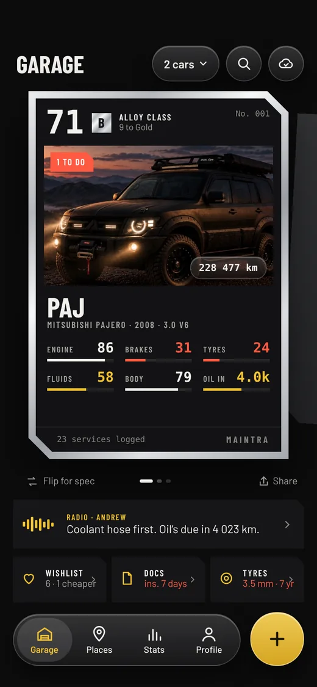
v8Авто як карткаКолекційна картка зі спеками і класом.
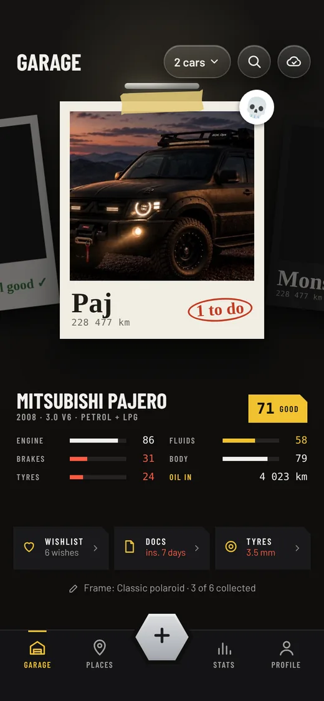
v9Полароїд повертаєтьсяГра поверх, але фото знову на стіні.v12Чорне і золотоШестикутники, гоночний HUD.
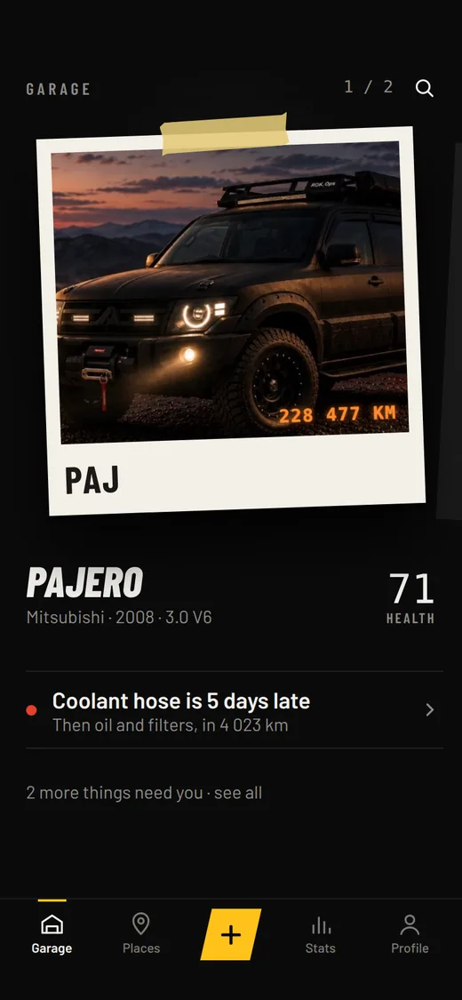
v13Забрати все зайвеМатовий чорний, жовтий тільки для акценту.v19Меню як у гріВішлист, документи, шини, полиця.v24Один зріз для всьогоСкляний трей, контраст повернувся.
Що не вижило: рейтинг серед інших власників, картки-колекції, шестикутники і великий HUD. Що лишилось від ігор: клас і стан авто, меню-смуга, жовтий як головна дія.
05 Мова дизайну
Зріз, восьмикутник і жовтий для дії
Спочатку я взяв Barlow, той самий, що в ARC Raiders. Потім перейшов на Tektur: його зрізані кути збігаються з картками, кнопками й іконками. Для тексту Fira Sans. Статуси замість кружечків стали восьмикутниками. Жовтий лише там, де треба натиснути або глянути першим.
ШРИФТ
228 477 KM
Tektur для назв і цифр, Fira Sans для всього, що читаєш.
КНОПКИ
ЗберегтиПізніше
Той самий скіс на кнопках, чипах і вкладках, той самий зріз на кутах карток.
СТАТУСИ
Патрубок охолодження5 днів
Повітряний фільтр900 км
Олива + фільтри4 023 км
ЗДОРОВ'Я 71
Скошені сегменти, як шкала на приладці.
Фон #0B0B0A
Плашка #151513
Текст #ECE4D6
Другорядне #8F897E
Дія #F4B223
06 Рух
Спокійно, поки не час
Анімація тут частина мови, а не прикраса. Вона показує, звідки взялась річ і куди пішла: полароїд стає шапкою, плашки їдуть з-під пальця, штамп ставиться, коли роботу закрито. Усе коротше за 320 мс, крім Моменту.
Спокійно за замовчуванням
До 320 мс. Приходить швидко, йде ще швидше.
Ближче до пальця першим
Меню розкривається знизу вгору, з кроком 40 мс.
З-за краю, не з повітря
Плашки виїжджають справа і ніколи не проявляються на місці.
Гучно тільки в Моменті
Відскок, масштаб і вібрація лише тоді, коли закрив роботу.
+ менюПлашки виїжджають з-за правого краю, ближня до пальця перша. Плюс повертається в хрестик.Свайп по гаражуПолароїд іде за пальцем і сідає на місце пружиною. Наприкінці місце для ще однієї машини.Полароїд у шапкуФото з гаража стає шапкою екрана авто, а не відкривається з нуля.З гаража в автоЕкран авто заїжджає збоку і так само повертається, гараж лишається під ним.МоментРоботу закрито: штамп SERVICED, потім +8 до здоров'я. Єдине місце, де анімація гучна.AI пише планВидно, що саме зараз робиться і скільки ще чекати.Витрату збереженоЛист закривається, запис лягає в список, де його й шукатимеш.Вкладки автоСервіси, план, пальне, гроші. Шапка лишається, міняється тільки зміст.
З увімкненим «Зменшити рух» у системі все те саме, але без руху: прості проявлення або миттєва зміна.
07 Логотип
Від мандали до штриха
Назва складена з maintenance і tracker, а звучить як «мантра». Звідси стара шестерня з мандалою всередині. У нову мову вона не лягала: круглий, детальний знак серед зрізаних форм. Перебрав усе: шестерні, одометри, значки з ігор, гаражні ритуали. На це пішла не одна безсонна ніч, а коли я все ж спав, мені снилися логотипи.
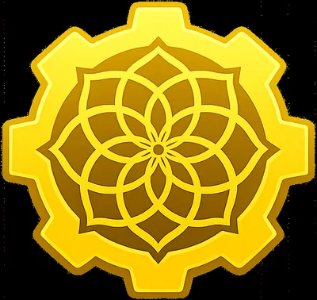
Було. Шестерня і мандала.
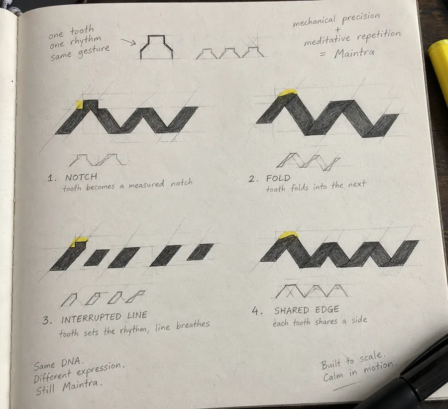
Блокнот. Пошук ритму з трьох похилих штрихів.Стало. M і t з трьох скошених штрихів.
Дві літери
M і t одразу: maintenance tracker в одному знаку.
Пружина
Похилі штрихи читаються як пружина амортизатора. Це про машину, а не про абстракцію.
Простір для руху
Штрихи можуть стискатись і відбивати, як підвіска на ямі. Готова анімація для запуску, синхронізації й завантаження.
Мова 2.0
Ті самі скошені лінії й зрізи, що в кнопках, картках, іконках і шрифті Tektur.
08 До і після
1.6 проти 2.0
Ті самі дані, той самий Pajero. Різниця в тому, що екран тепер відповідає на питання, а не перелічує все.
1.6 · Гараж→
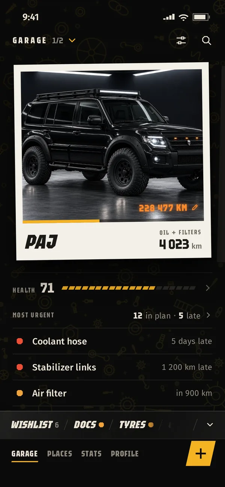
2.0 · Гараж
Полароїд більший, під ним одна цифра: скільки до заміни оливи. Далі тільки найтерміновіше. Вішлист, документи, шини і полиця переїхали в смугу внизу.
1.6 · Авто→
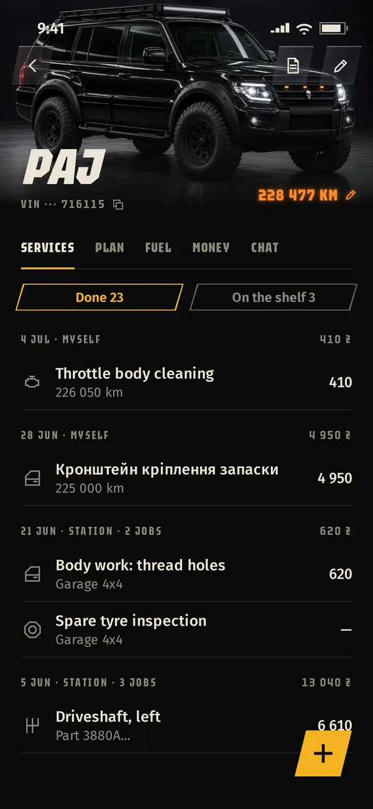
2.0 · Авто
Роботи згруповані по візитах на СТО, з сумою за візит. Зроблене і куплене на полицю розділені.
1.6 · План→
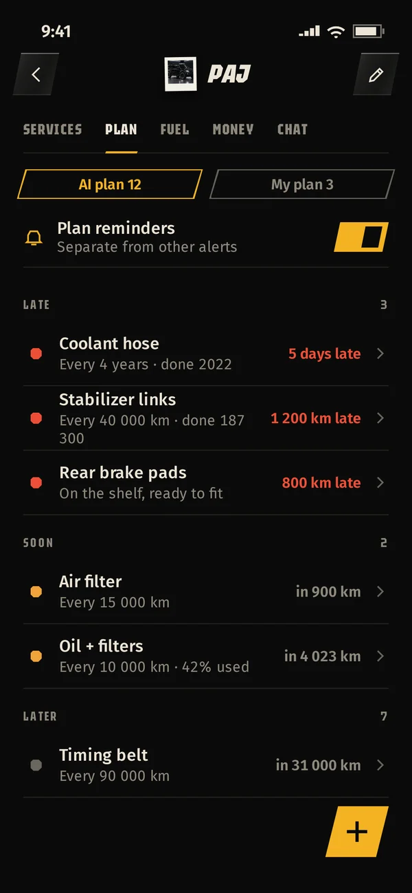
2.0 · План
Прострочене, скоро і пізніше. Кожен рядок каже, коли і чому. Менше іконок і тексту, стриманіші кольори, більше повітря.
09 Куди дійшли
Maintra 2.0
Темна і світла теми, класичний вигляд гаража, телефон і планшет, офлайн-мапа зі статистикою поїздок, сейф для документів, шини. Скріншоти для сторів уже готові дванадцятьма мовами.
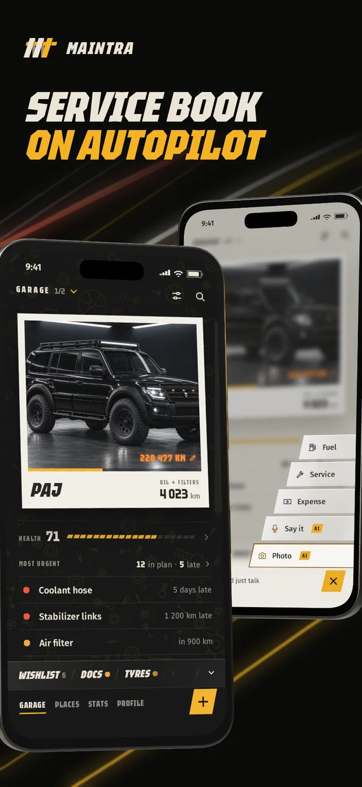
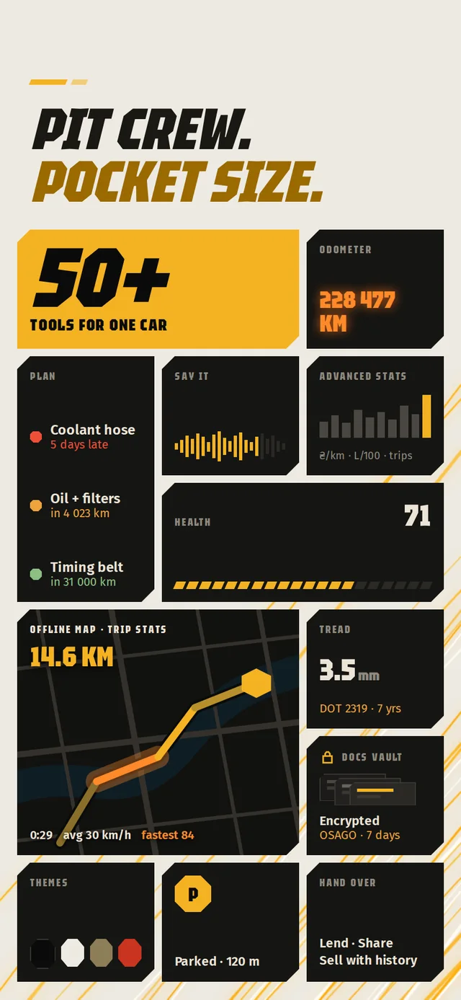
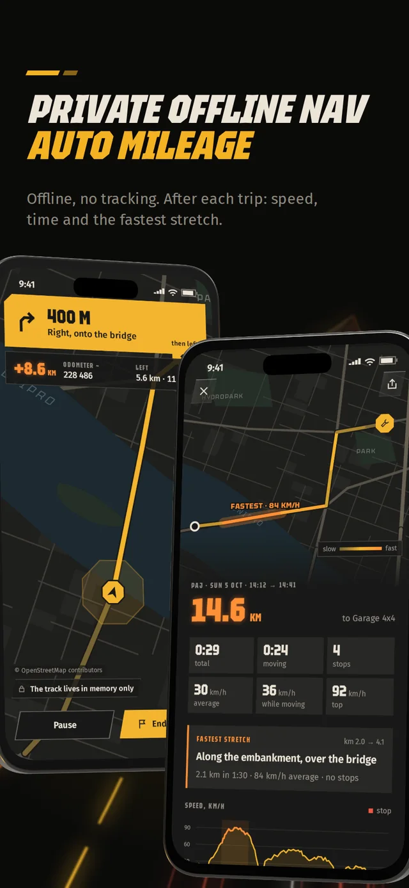
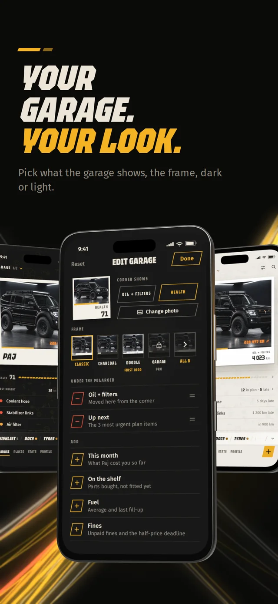
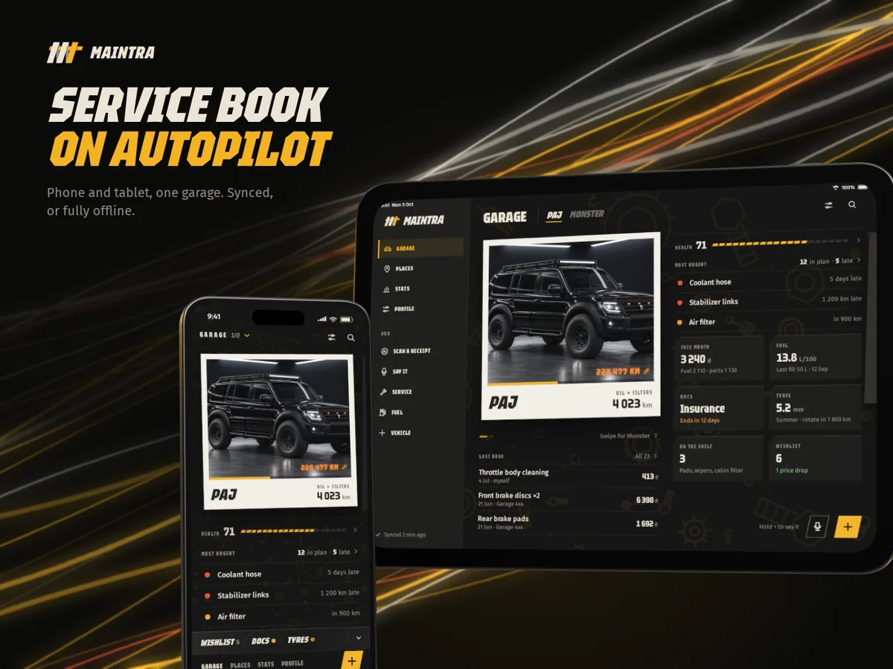
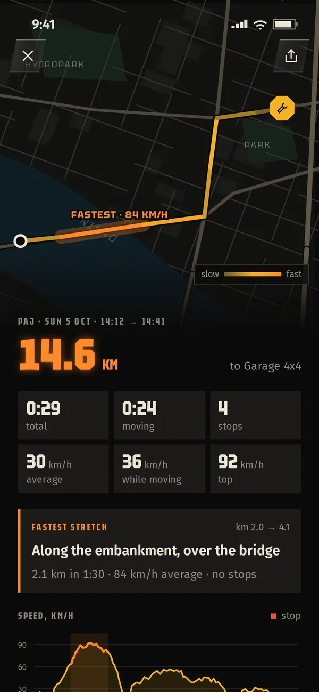
Після поїздкиШвидкість, час, найшвидша ділянка. Трек не покидає телефон.
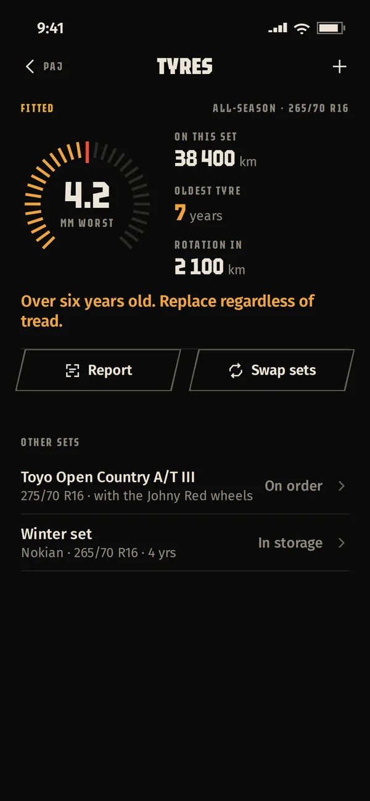
ШиниПротектор по кожному колесу, вік, ротація.
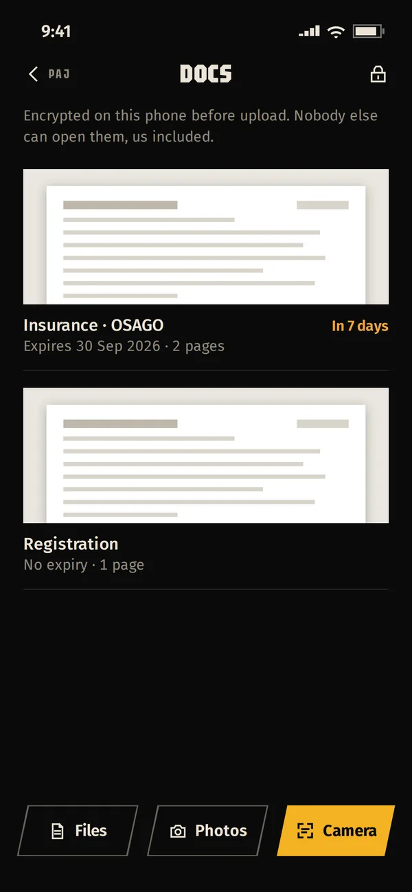
ДокументиШифруються на телефоні ще до завантаження.
10 Під себе
Темна, світла або як у телефоні
Тему обираєш у профілі: темна, світла або за системою. Правила ті самі, змінюється тільки світло. Гараж теж можна перемкнути: полароїд з фото або класичний список карток. А далі власні теми, нижче.
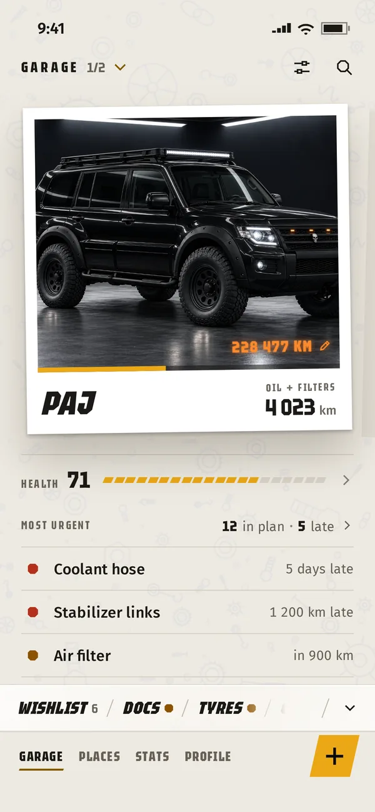
Гараж
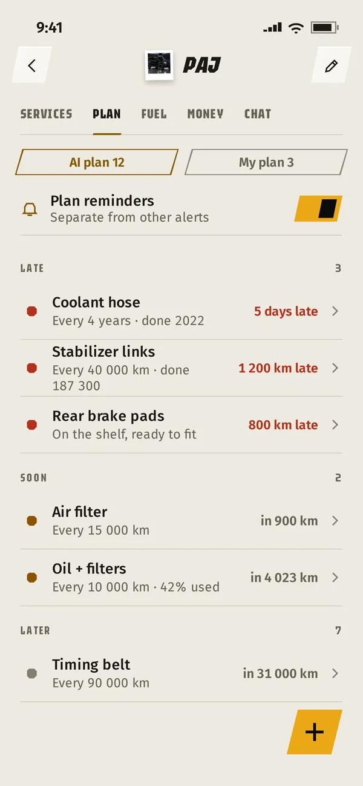
План
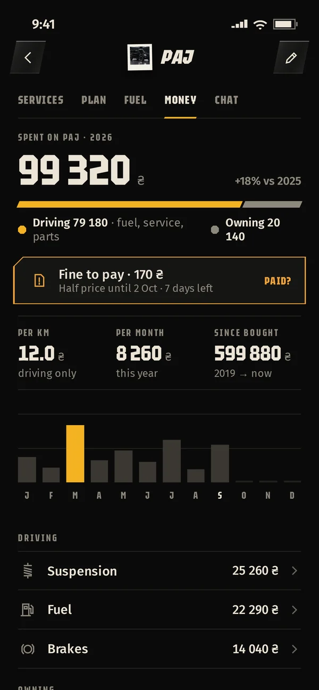
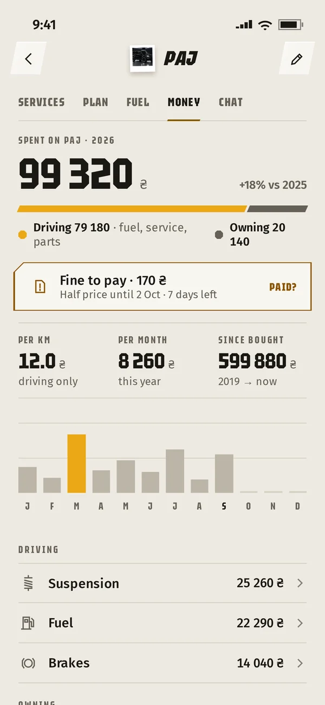
Витрати
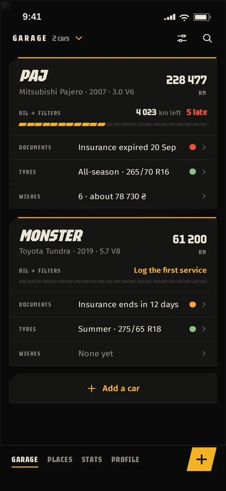
Класичний гараж
Теми на вибір
Три безкоштовні і чотири в Pro. Тема змінює тільки фон і акцент. Текст, іконки і статуси лишаються: червоне прострочене, бурштинове скоро, зелене все гаразд. Будь-яку можна приміряти на хвилину, а Red light може вмикатись сам після заходу сонця.
Вибір темиПрофіль → ВиглядGarageТемна, знайомаWorkshopСвітла, на деньRed lightЧервоний акцент на нічField ProОлива і тан, камуфляж на +Blueprint ProКреслення, блакитні лініїLogbook ProСтара сервісна книжка, синє чорнилоRose ProСливова вночіRose ProРожева вдень